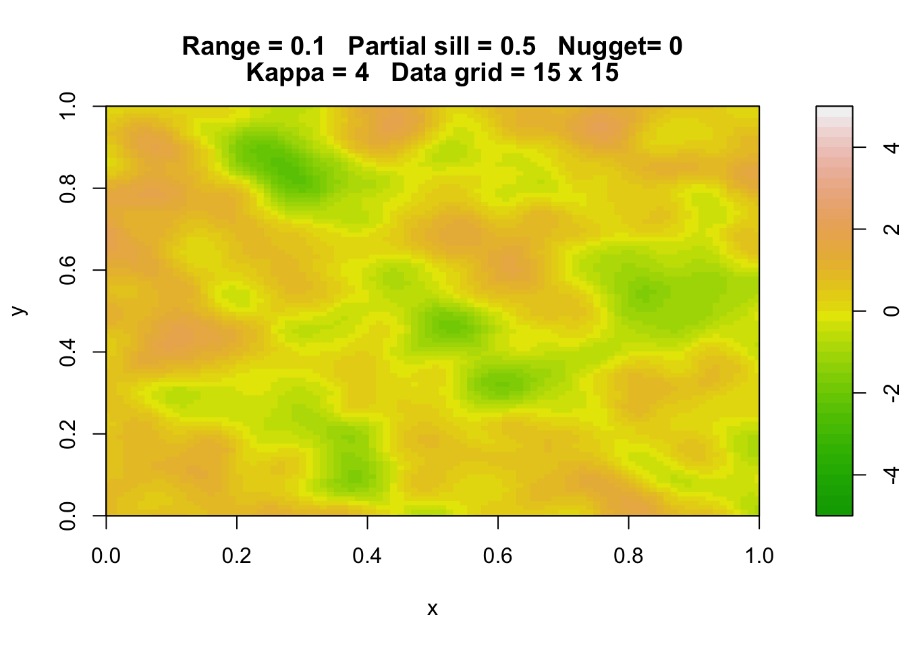
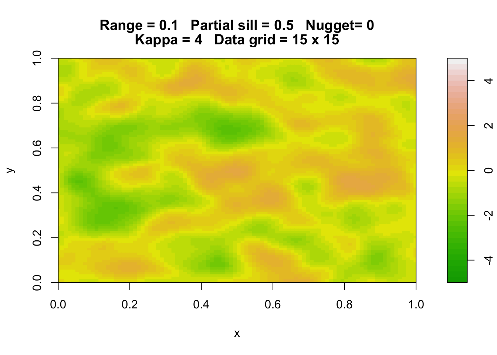
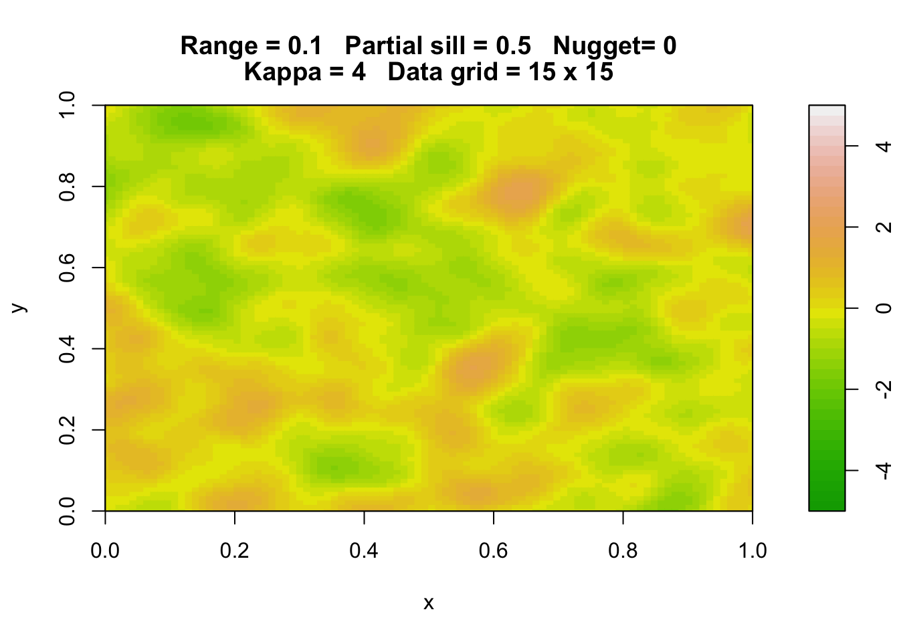
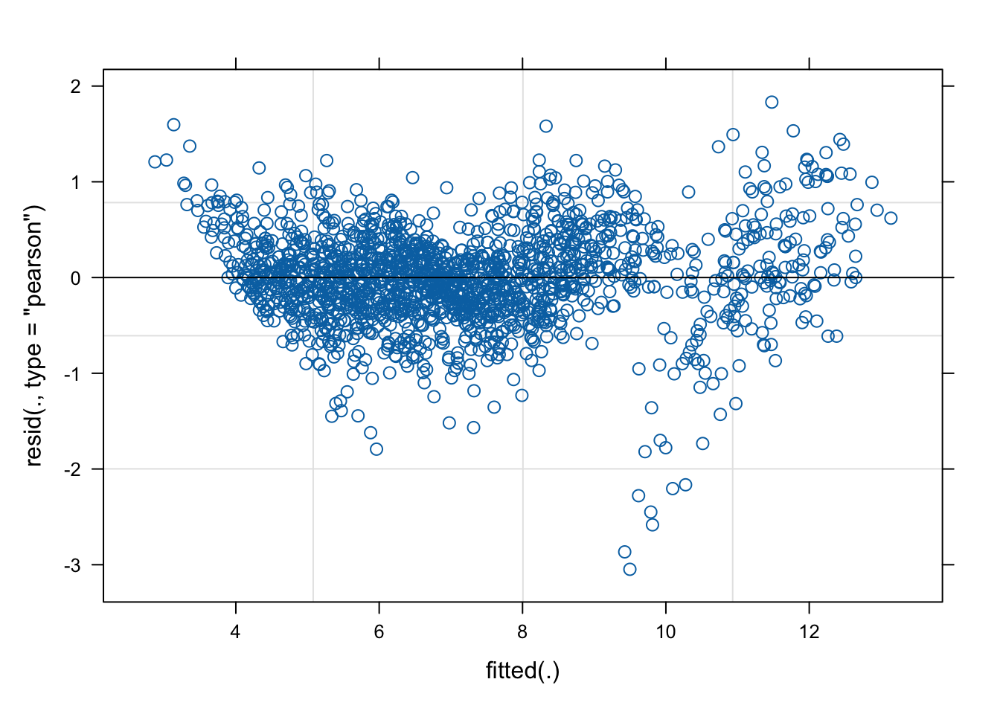
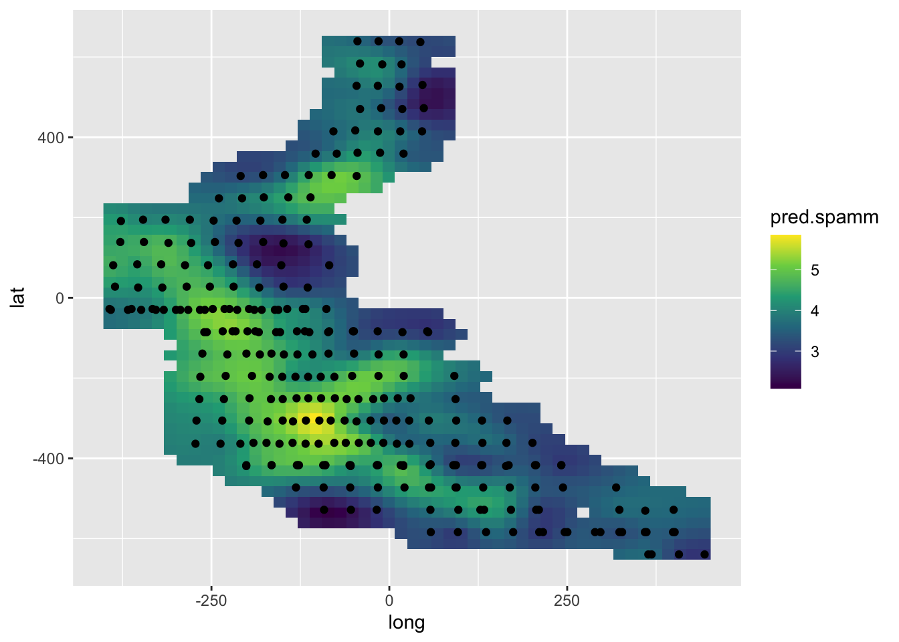
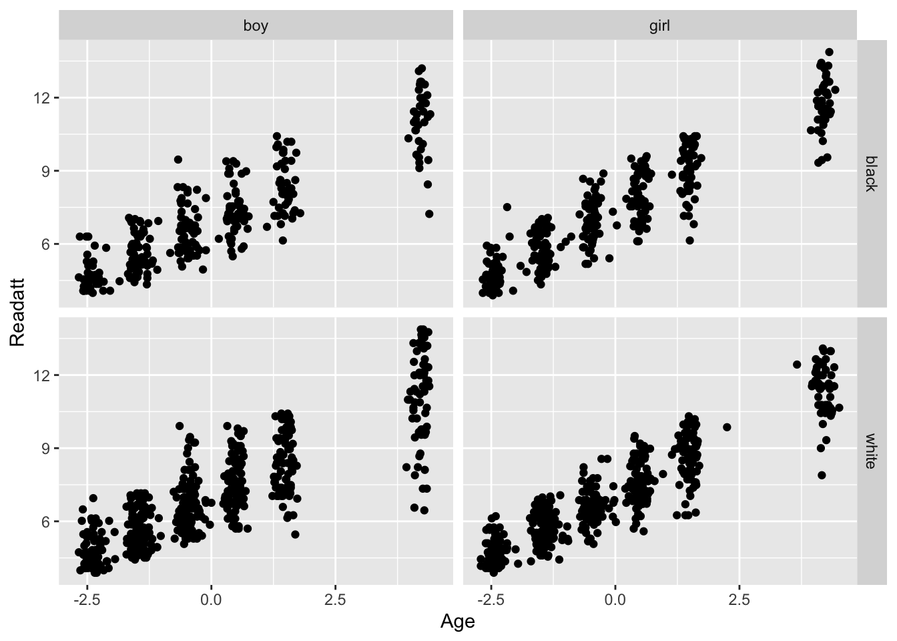
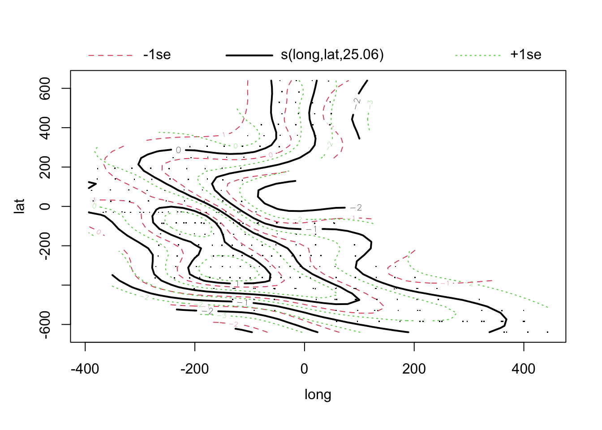
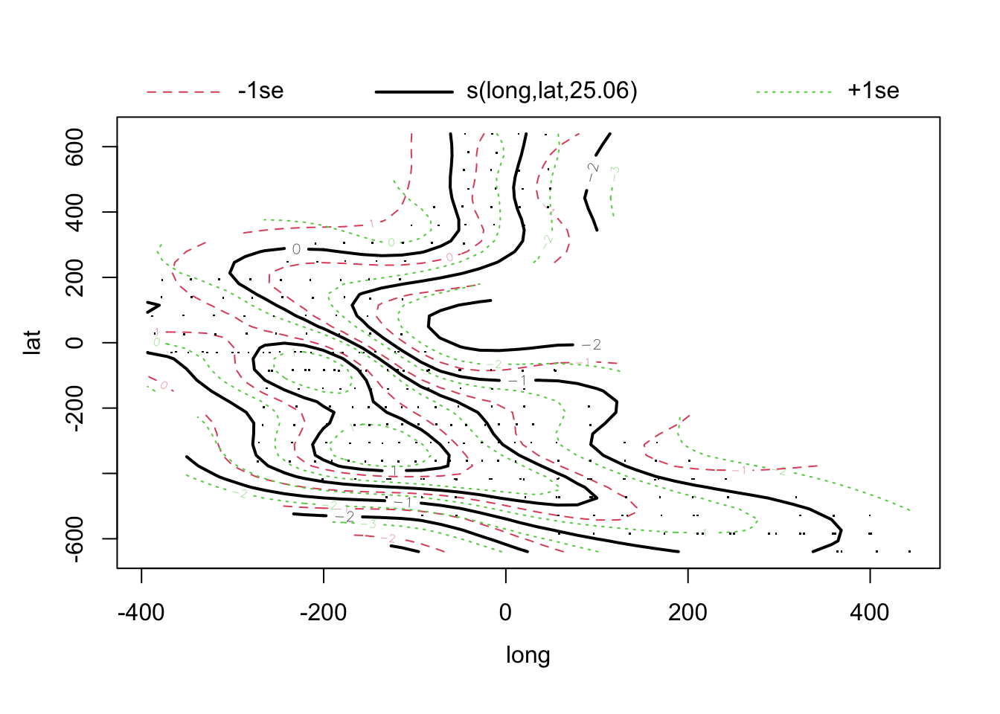

1.3 Geostatistical models
1.3.1 Gaussian random fields
The concept of a Gaussian random field is an important one in spatial modelling. To gain some intuition on this, an interactive exploration of Gaussian fields can be launched by calling the function rp.geosim in the rpanel package. The smgrid argument controls the resolution of the images. If your computer does not have enough computational power for smgrid to be set to 100, try reducing this or accepting the default value of 40.
The plots below illustrate three simulations of a Gaussian random field, using the same parameters settings. There are common features features such as the smoothness of the surface and the size of the variations but the detailed patterns change randomly.

At any location in the field, the value observed as a normal random variable with mean 0 and variance controlled by the partial sill parameter (pSill). The correlation between the values at difference locations diminishes with their distance apart. Values at locations which are close look similar while values which are far apart tend to look different. This is controlled by the Range parameter. Values of the field distance at pairs of locations which are this distance apart are virtually independent of one another.
If a field is isotropic then it has the same characteristics in all directions. The correlation between values of the field is controlled by their distance apart, not their direction. There are sliders to control the degree of anisotropy and its direction. You may like to experiment with this too.
1.3.2 Geostatistical models
library(tidyverse)
library(dsm)
data(mackerel, package = 'sm')
km <- latlong2km(mackerel$mack.long, mackerel$mack.lat)
mackerel$mack.long <- km$km.e
mackerel$mack.lat <- km$km.n
mackerel <- mackerel %>%
mutate(long = -mack.long, log.depth = log(mack.depth)) %>%
rename(lat = mack.lat)library(spaMM)
model.spamm <- fitme(log(Density) ~ poly(log.depth, 2) + Temperature + Matern(1 | long + lat),
data = mackerel)
summary(model.spamm)## formula: log(Density) ~ poly(log.depth, 2) + Temperature + Matern(1 |
## long + lat)
## ML: Estimation of corrPars, lambda and phi by ML.
## Estimation of fixed effects by ML.
## Estimation of lambda and phi by 'outer' ML, maximizing logL.
## family: gaussian( link = identity )
## ------------ Fixed effects (beta) ------------
## Estimate Cond. SE t-value
## (Intercept) 2.59146 0.234630 11.045
## poly(log.depth, 2)1 11.89888 1.852050 6.425
## poly(log.depth, 2)2 -9.91492 1.422122 -6.972
## Temperature 0.02202 0.008943 2.462
## --------------- Random effects ---------------
## Family: gaussian( link = identity )
## --- Correlation parameters:
## 1.nu 1.rho
## 1.10634702 0.01976482
## --- Variance parameters ('lambda'):
## lambda = var(u) for u ~ Gaussian;
## long + lat : 0.7714
## # of obs: 279; # of groups: long + lat, 275
## -------------- Residual variance ------------
## phi estimate was 0.561597
## ------------- Likelihood values -------------
## logLik
## logL (p_v(h)): -383.7337
Set up a spatial area over which to predict.
newdat.space <- expand.grid(log.depth = mean(mackerel$log.depth),
Temperature = mean(mackerel$Temperature),
long = seq(min(mackerel$long), max(mackerel$long), length = 50),
lat = seq(min(mackerel$lat), max(mackerel$lat), length = 50))
library(spatstat)
dst <- crossdist(newdat.space$long, newdat.space$lat, mackerel$long, mackerel$lat)
dst <- apply(dst, 1, min)
newdat.space <- newdat.space[dst < 50, ]The fitted spatial effect.
pred.spamm <- c(predict(model.spamm, newdat.space))
ggplot() +
geom_raster(aes(long, lat, fill = pred.spamm), data = newdat.space) +
scale_fill_viridis_c() +
geom_point(aes(long, lat), data = mackerel)
A generalised additive model is an alternative approach. This kind of model is discussed in an earlier chapter.
library(mgcv)
model.gam <- gam(log(Density) ~ s(log.depth) + s(Temperature) + s(long, lat), data = mackerel)
summary(model.gam)##
## Family: gaussian
## Link function: identity
##
## Formula:
## log(Density) ~ s(log.depth) + s(Temperature) + s(long, lat)
##
## Parametric coefficients:
## Estimate Std. Error t value Pr(>|t|)
## (Intercept) 3.22409 0.05364 60.11 <2e-16 ***
## ---
## Signif. codes: 0 '***' 0.001 '**' 0.01 '*' 0.05 '.' 0.1 ' ' 1
##
## Approximate significance of smooth terms:
## edf Ref.df F p-value
## s(log.depth) 2.597 3.298 12.101 2.98e-07 ***
## s(Temperature) 2.922 3.663 4.720 0.00172 **
## s(long,lat) 25.057 27.996 6.043 < 2e-16 ***
## ---
## Signif. codes: 0 '***' 0.001 '**' 0.01 '*' 0.05 '.' 0.1 ' ' 1
##
## R-sq.(adj) = 0.698 Deviance explained = 73.1%
## GCV = 0.90515 Scale est. = 0.8027 n = 279 

The estimated effects are very similar, despite the different perspectives of the modelling approaches. The spatial effects in particular are compared below.
pred.gam <- c(predict(model.gam, newdat.space))
ggplot() +
geom_raster(aes(long, lat, fill = pred.gam), data = newdat.space) +
scale_fill_viridis_c()
# geom_point(aes(long, lat), data = mackerel)
ggplot() +
geom_raster(aes(long, lat, fill = pred.spamm), data = newdat.space) +
scale_fill_viridis_c()
# geom_point(aes(long, lat), data = mackerel)

There are an increasing number of options for the modelling of spatial data, including:
geoRwhen the focus is primarily on the spatial effects, without additional covariates;inlafor a Bayesian modelling approach;mgcvfor an additive modelling approach.prevmap
glmmTMB See spatial example at https://cran.r-project.org/web/packages/glmmTMB/vignettes/covstruct.html and https://rpubs.com/Rebekko/922320
nlme is also an option: https://stats.oarc.ucla.edu/r/faq/how-do-i-model-a-spatially-autocorrelated-outcome/
Gómez-Rubio (2020), with on-line version at https://becarioprecario.bitbucket.io/inla-gitbook/ McElreath (2018) Krainski et al. (2018), with on-line version at https://becarioprecario.bitbucket.io/spde-gitbook/index.html
1.3.3 SO2: a model based on smoothing
An interactive display of this spatiotemporal dataset can be launched by executing the code below.
SO2 <- mutate(SO2, year = year + (month - 0.5) / 12)
mapxy <- maps::map('world', plot = FALSE,
xlim = range(SO2$longitude), ylim = range(SO2$latitude))
back <- function() maps::map(mapxy, add = TRUE)
with(SO2, rp.plot4d(cbind(longitude, latitude), year, logSO2,
col.palette = rev(heat.colors(12)), background.plot = back))A gam model for these data was considered earlier. This can be built and viewed by executing the code below.
with(SO2, {
location <- cbind(longitude, latitude)
model <- mgcv::gam(logSO2 ~ s(longitude, latitude, year))
loc1 <- seq(min(longitude), max(longitude), length = 30)
loc2 <- seq(min(latitude), max(latitude), length = 30)
yr <- seq(min(year), max(year), length = 30)
newdata <- expand.grid(loc1, loc2, yr)
names(newdata) <- c("longitude", "latitude", "year")
model <- predict(model, newdata)
model <- list(x = cbind(loc1, loc2), z = yr,
y = array(model, dim = rep(30, 3)))
rp.plot4d(location, year, logSO2, model,
col.palette = rev(heat.colors(20)),
foreground.plot = back)
})